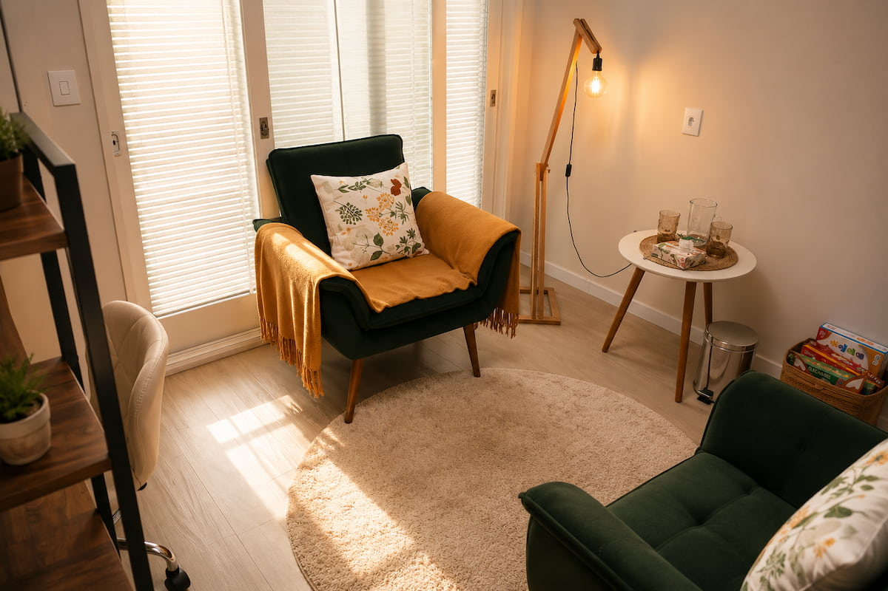
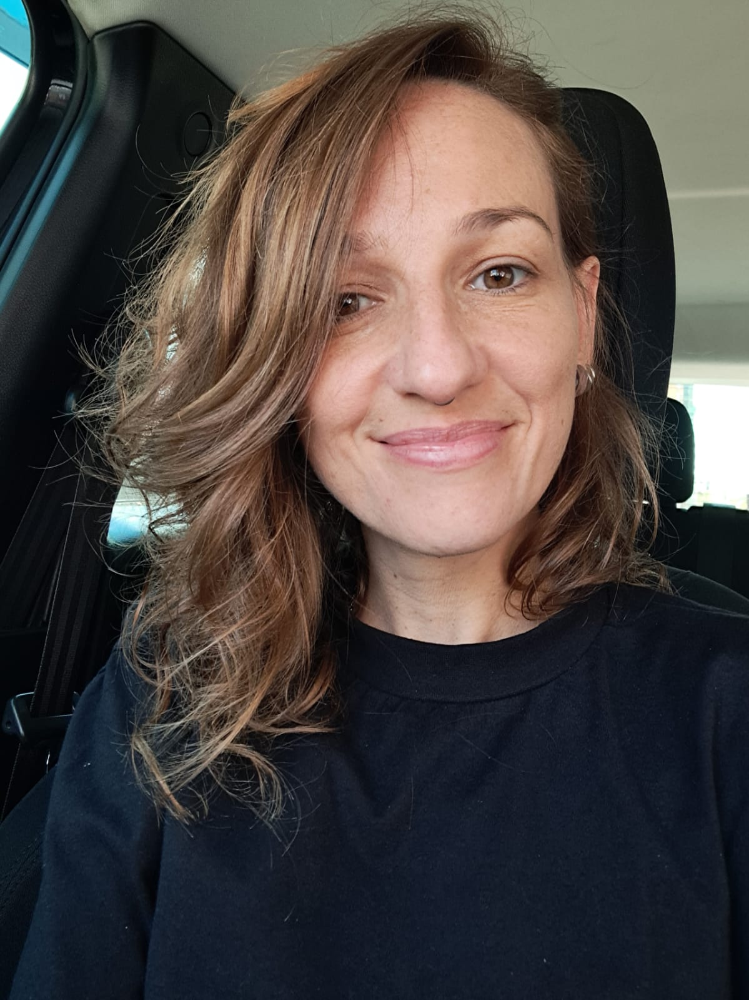
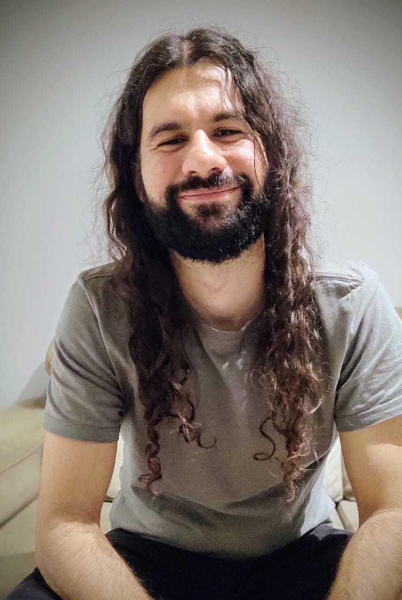

Avaliação Psicológica
Texto provisório.
Escuta em Movimento
Texto provisório de apresentação da landing page.
Agendar atendimento
Texto provisório sobre o principal atendimento oferecido pelo Espaço Aruã.
Texto provisório.
Texto provisório.
Texto provisório.
Profissionais
Conheça os profissionais que compõem o Espaço Aruã.

CRP 07/22344
Especialista em Saúde Mental
Atendimento a crianças, adolescentes, adultos e casais.
Texto provisório de apresentação da trajetória e da forma de trabalho da profissional.
Texto provisório para a trajetória profissional completa, formação, experiências e áreas de atuação.

CRP 07/37779
Mestre em Psicologia Social
Atendimento a adolescentes, adultos e idosos.
Texto provisório de apresentação da trajetória e da forma de trabalho do profissional.
Texto provisório para a trajetória profissional completa, formação, experiências e áreas de atuação.
WhatsApp, Instagram, endereço e mapa entram aqui.
Chamar no WhatsApp